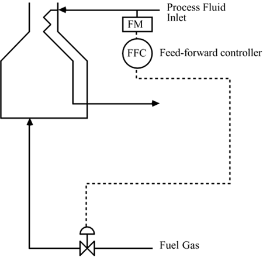
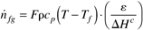
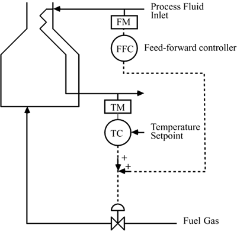
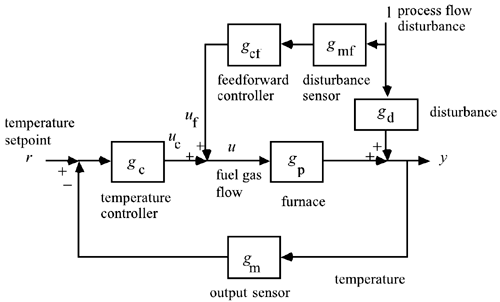
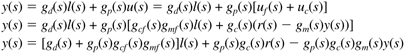
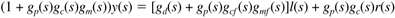
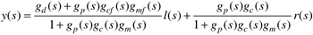

| [ Team LiB ] |
|
10.6 Feed-Forward ControlWhen a disturbance affects a process under feedback control it is necessary for a measured process output to change before corrective action is taken to change the manipulated input. It would be preferable to have a sensor that measures the disturbance and adjusts the manipulated input before the process output changes. Consider the furnace system studied earlier in this chapter and shown in Figure 10-11. One possible disturbance is the process fluid flow rate; if the flow rate increases 20%, then the required heat duty should also increase by 20%. The purpose of the feed-forward control strategy shown is to immediately change the fuel gas flow rate (for simplicity we assume that the fuel gas flow rate is directly manipulated in this diagram) when a change in the process flow rate is sensed. Figure 10-11. Feed-forward control of temperature based on the measured process fluid flow rate (disturbance input). For this furnace example, the steady-state energy balance can be used to find the fuel gas flow rate  where F = process stream flow rate, r = density, cp = heat capacity, T = desired outlet temperature, Tf = feed temperature, e = furnace efficiency, and DHc = heat of combustion of fuel gas. A steady-state feed-forward controller computes the fuel gas flow rate based on the measured process flow rate (and possibly the process feed temperature). Sometimes it is important to also consider dynamic effects, as shown in several examples that follow. The performance of feed-forward control is limited by model uncertainty. Without a perfect process model the controller cannot completely compensate for disturbances and there will generally be offset. In practice, feed-forward control is combined with feedback control, as shown in Figure 10-12. Here the feed-forward controller compensates for process flow rate disturbances, while the feedback controller compensates for other disturbances and model uncertainty. The corresponding block diagram is shown in Figure 10-13. Figure 10-12. Feed-forward/feedback control of temperature based on the measured process fluid flow rate (disturbance input). Figure 10-13. Feed-forward/feedback control block diagram for the furnace example. Consider the feed-forward/feedback block diagram shown in Figure 10-13. We can develop the closed-loop transfer function by using the following steps:  Rearranging, to solve for y(s), we find  or  Equation (10.6) is the closed-loop relationship for feed-forward/feedback control. Notice that a (stable) feed-forward controller does not affect the closed-loop stability, since the feed-forward controller transfer function does not appear in the closed-loop characteristic equation (denominator polynomial). |
| [ Team LiB ] |
|